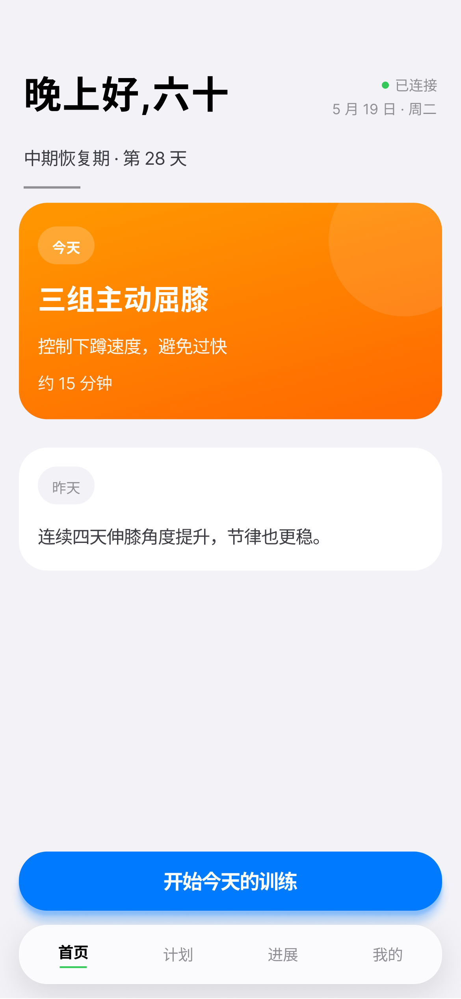
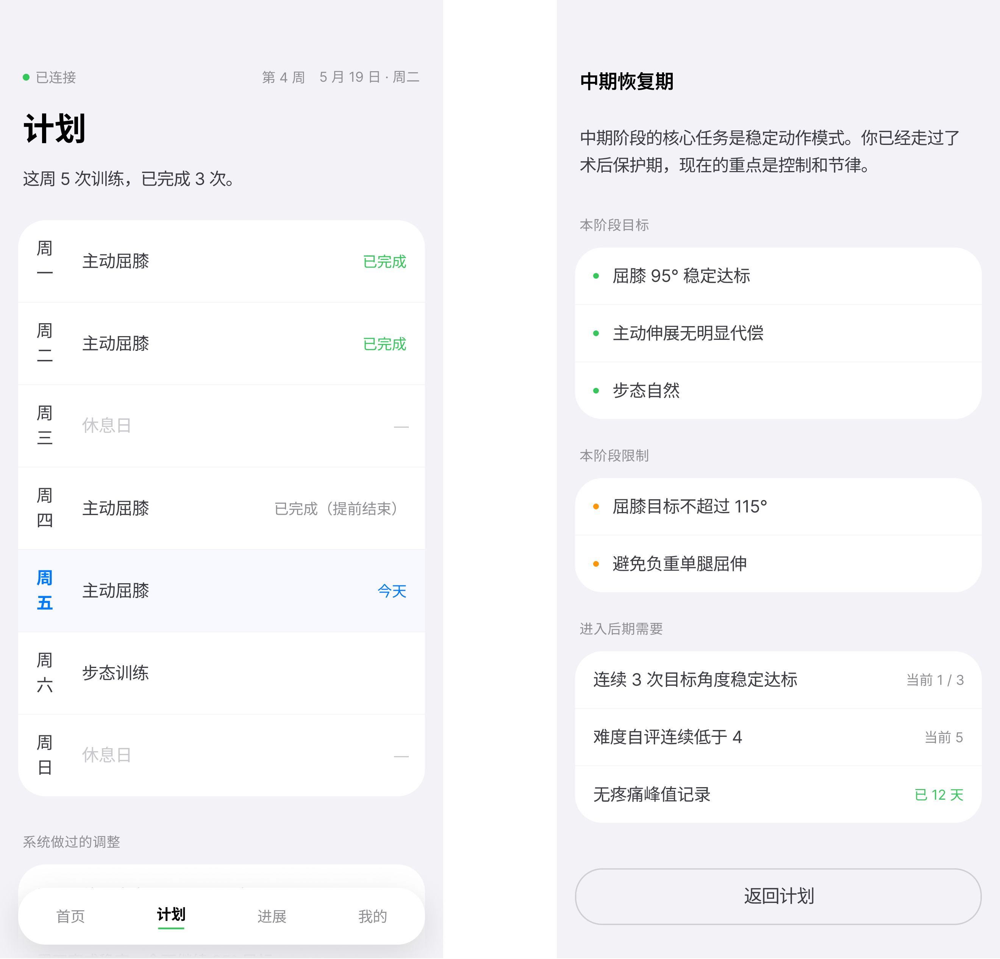
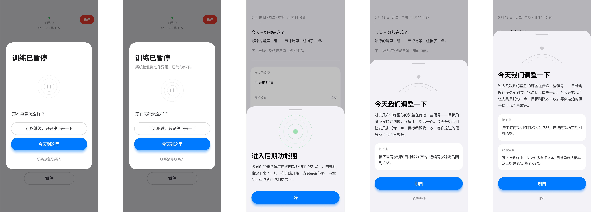

App Screens
四个关键界面
围绕三阶段框架组织信息架构：让用户知道自己在哪个阶段、目标与限制是什么、为什么进阶或调整。

首页 · 阶段状态

计划 · 阶段管理

训练 · 实时反馈

模态 · 安全事件
动作进行中，任何视觉信息都不应是必要的。In-action 反馈走力、触觉、声音；屏幕只在组间休息、训练总结、阶段切换与安全事件时出现——让注意力回到身体。React Native 实现。
术后早期患者因频繁看屏幕而忽略本体感觉，反而延缓恢复。Eyes-free 不只是 UX 选择，而是一种康复手段。
围绕三阶段框架组织信息架构：让用户知道自己在哪个阶段、目标与限制是什么、为什么进阶或调整。



训练执行界面提供「可瞥视状态」，但不依赖它。屏幕上的文字遵守具体、有数据锚、有路径三原则——不安慰、不夸赞、不用感叹号与 emoji。组间休息与总结时，才回到屏幕回看这一组发生了什么。